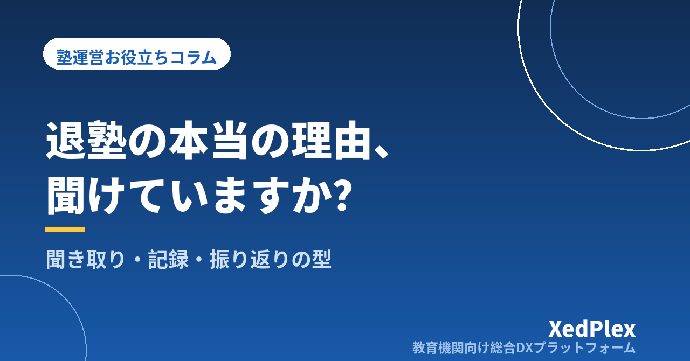

塾の退塾理由、本当の理由を聞けていますか？｜退塾時の聞き取り方・記録・次に活かす振り返りの型

保護者から「部活が忙しくなったので、今月で辞めさせてください」と連絡が来る。「そうですか、がんばってくださいね」と返して、退塾の手続きを進める。後日、別の保護者から「実は○○くん、先生が替わってから行きたがらなくなったらしいですよ」と聞いて、胸がざわつく──。小さな塾を運営していると、こうした経験は珍しくないのではないでしょうか。
退塾の申し出は、塾長にとって気持ちの重い出来事です。早く手続きを終わらせたくなるのも自然なことです。ただ、退塾理由は塾の弱点や改善点がいちばん正直に表れる情報でもあります。この記事では、引き止めのテクニックではなく、退塾時に本当の理由を聞き取り、記録し、次の退塾を減らすことにつなげるための型を整理します。
退塾理由が「表向きの理由」で終わってしまうわけ
退塾の連絡で伝えられる理由は、「部活」「受験が終わった」「家庭の事情」「費用」など、角が立たないものが中心になりがちです。もちろん、それがそのまま本当の理由であることも多くあります。一方で、塾側が見落としやすい事情が重なっていることもあります。表向きの理由で終わってしまう原因は、主に次の3つです。
- 保護者が気を遣っている：講師や指導内容への不満は、お世話になった塾に直接言いにくいものです。
- 連絡手段が短文向き：LINEやメールでの退塾連絡は、どうしても一言で済ませる形になります。
- 塾側が聞く場を用意していない：「承知しました」と返して終わると、保護者も話すきっかけを失います。
つまり、本当の理由が分からないのは保護者のせいではなく、聞く仕組みがないことが大きいのです。
申し出を受けたら：最初の対応は「引き止め」より「確認と感謝」
退塾の申し出を受けた直後にやりがちなのが、その場での引き止めです。「あと少しで成績が上がるところなのに」「受験まで続けたほうが」といった言葉は、本心からの助言であっても、保護者には押しつけに聞こえることがあります。最初の連絡では、次の順番で対応するのがおすすめです。
- 連絡へのお礼を伝える：「ご連絡ありがとうございます」と、まず受け止めます。
- 事務的な確認をする：最終授業日、最終月の請求、教材や振替の扱いなど、規定に沿って確認します。
- 短い面談または電話をお願いする：「今後の指導の参考にしたいので、10分ほどお話を聞かせていただけませんか」と依頼します。
最終月の請求や申し出期限のルールがあいまいだと、この段階で話がこじれやすくなります。規定の整え方は退塾・休塾のルールと手続きの整え方で詳しく扱っています。
面談や電話を退塾手続きの条件にすると、保護者の負担感が増します。断られたら無理をせず、短いアンケート（3問程度）を送る形に切り替えます。
本当の理由を聞く「退塾時の聞き取り」の進め方
聞く相手とタイミング
聞き取りは、担当講師ではなく塾長が行うのが基本です。講師についての話が出たとき、本人を前にすると保護者は言いにくくなります。タイミングは、申し出から最終授業日までの間が適しています。最終日を過ぎると連絡がつきにくくなり、記憶も薄れていきます。
質問は「評価」より「事実」と「期待」を聞く
「何がご不満でしたか」と聞くと、保護者は答えに詰まります。事実と期待に分けて聞くと、話してもらいやすくなります。
| 聞きたいこと | 質問の例 |
|---|---|
| きっかけ | 「辞めようとお考えになったのは、いつ頃からでしたか」 |
| 家庭での様子 | 「最近、お家で塾のことをどんなふうに話していましたか」 |
| 期待とのずれ | 「入塾のときに期待されていたことと、実際はどうでしたか」 |
| 改善点 | 「もし塾がこうだったら、という点があれば教えてください」 |
| 今後 | 「この先の勉強は、どのように進めるご予定ですか」 |
最後の「今後」の質問は、他塾への移籍なのか、自宅学習なのか、いったん休むのかを知る手がかりになります。答えにくそうであれば、深追いしないことも大切です。
聞き取りで避けたいこと
- その場で反論・弁明する：「それは誤解で…」と返すと、保護者はそれ以上話さなくなります。説明が必要なら、最後にひと言添える程度に留めます。
- 講師や他の生徒を悪く言う：理由に共感するつもりでも、塾全体の信頼を損ねます。
- 生徒本人を責める話題にする：「宿題をしてこなかったので」などの話は、退塾時には不要です。
不満や強い指摘を受けたときの受け止め方は、保護者クレーム対応の手順の「聞き取り」の考え方が参考になります。
退塾理由は「分類」して記録する
聞き取った内容は、その日のうちに記録します。自由記述だけで残すと、あとで振り返るときに傾向が見えません。分類（1つ選ぶ）＋具体的な内容（自由記述）の2段で残すのがおすすめです。
| 分類 | 例 | 塾で打てる手の有無 |
|---|---|---|
| 修了・節目 | 受験終了、卒業、目標達成 | 継続案内の時期と内容 |
| 生活の変化 | 転居、部活、習い事との両立 | 時間帯・コマ数の選択肢 |
| 費用 | 家計の事情、兄弟の入塾 | 料金体系・コース設計 |
| 効果の実感 | 成績が上がらない、伸びが見えない | 報告・面談・指導内容 |
| 人・環境 | 講師との相性、教室の雰囲気、友人関係 | 担当変更・環境づくり |
| 本人の意欲 | 行きたがらない、勉強そのものが負担 | 声かけ・目標設定 |
| 他塾・他サービスへ | 集団塾、通信教材、家庭教師 | 強み・違いの伝え方 |
あわせて、在籍期間・学年・担当講師・最後の面談日も残しておくと、「入塾半年以内の退塾が多い」「面談から間が空いた生徒が辞めている」といった傾向に気づけます。日ごろの授業記録が残っていれば、退塾前の変化（遅刻が増えた、表情が変わったなど）とも照らし合わせられます。記録の習慣づくりは生徒記録（日誌）の残し方で紹介しています。
なお、退塾者の記録も生徒の個人情報です。振り返りに必要な範囲に絞り、保管場所と閲覧できる人を決めておくことが前提になります。
半年に一度の振り返りで「次の退塾」を減らす
記録は、ためるだけでは意味がありません。半年に一度（たとえば夏期講習前と年度末）、30分ほど時間を取って振り返ります。
- 件数を分類ごとに数える：どの分類が多いかを見ます。少人数の塾では1〜2件の差は誤差なので、偏りの大きいものに注目します。
- 「打てる手がある分類」を1つ選ぶ：修了や転居は防げません。効果の実感や人・環境など、塾の運営で変えられるものを優先します。
- 次の半年でやることを1つだけ決める：「入塾3か月目に必ず面談する」「成績が横ばいの生徒には月1回の報告を追加する」など、具体的な行動にします。
- 次回の振り返りで効果を見る：同じ分類の退塾が減ったかを確認します。
退塾者数を毎月の数字として追う方法は塾長が毎月見るべき5つの数字で、退塾を未然に防ぐ保護者との接点づくりは退塾を防ぐ保護者コミュニケーションの仕組みで解説しています。振り返りで見えた課題を、在塾生向けの保護者アンケートで確かめるのも有効です。
最後の印象が、紹介や再入塾につながる
退塾は関係の終わりではありません。最終授業日に生徒へひと言かけ、保護者にお礼の連絡を送るだけでも、印象は大きく変わります。「また何かあれば、いつでもご相談ください」と伝えておけば、受験前の再入塾や、兄弟・知人の紹介につながることもあります。紹介の仕組みについては紹介・口コミで生徒を増やす仕組みもあわせてご覧ください。
まとめ：退塾理由は、塾をよくするためのいちばん正直な声
退塾の申し出は、塾長にとってつらい瞬間です。それでも、引き止めより確認と感謝、聞き取りは塾長が事実と期待を聞く、理由は分類して記録する、半年ごとに振り返って1つだけ手を打つ。この流れを型にしておけば、ひとつひとつの退塾が、次の生徒を守る材料に変わっていきます。
最初の一歩として、この1年に退塾した生徒を思い出し、上の表の分類に当てはめてみてください。記録が手元になくても、塾長の記憶だけで傾向が見えてくることがあります。生徒情報や面談の予定、日々の記録をひとつの場所にまとめておくと、次からは振り返りがぐっとラクになります。
この記事を書いた運営より
私たちは、個人経営・小規模の学習塾向けに、生徒管理・QRコードでの入退室記録・月次請求・保護者へのLINE/メール通知・AIによる学習支援までをひとつにまとめた教育機関向け総合DXプラットフォーム「XedPlex（ゼドプレックス）」を開発・提供しています。初期費用は0円、料金は生徒1名あたり月額300円（税込）から。生徒50名の塾なら月15,000円（税込）です。全国8つの教室で導入されており、導入塾には紹介ホームページの無料作成も行っています。機能の詳細説明はこちら。
XedPlexには、生徒管理や面談予定管理、指導報告書、デイリーノートもそろっているので、この記事で紹介した「日々の記録・面談の予定・退塾時の振り返り」に必要な情報をひとつのシステムの中に残しやすくなります。
XedPlexの詳細を見る